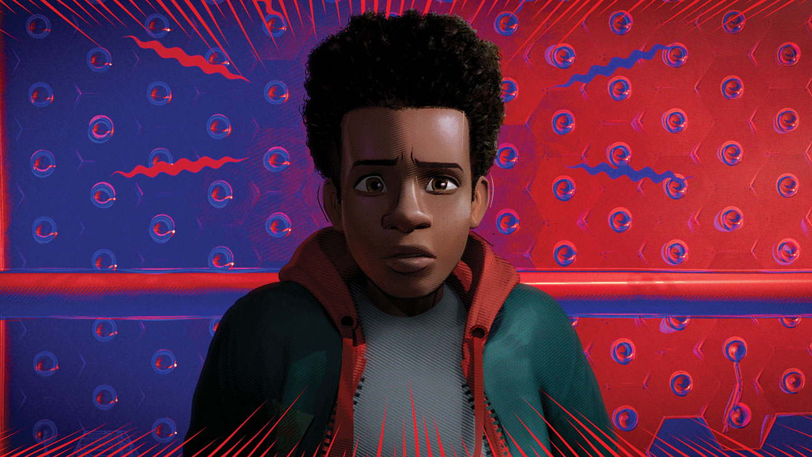
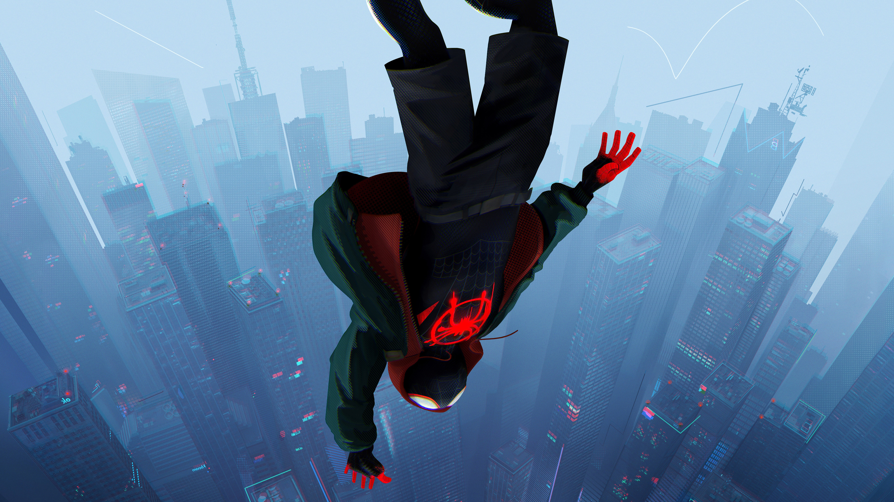

Miles Morales' development in "Spider-Man: Into the Spider-Verse" is a central aspect of the movie. At the start of the film, Miles is a regular teenager trying to adjust to his new school, but the bite from a radioactive spider drastically alters his life.
Initially, he struggles with his new powers, lacking control over them and failing to live up to the expectations set by the original Spider-Man. He's also dealing with grief over the loss of Peter Parker, who was a figure of inspiration for him.
Through his encounters with other Spider-people from different dimensions, each with their own unique approaches to heroism, Miles learns important lessons about what it means to be a hero. Particularly influential is an older, more cynical Peter B. Parker who becomes an unwilling mentor to Miles.
Miles deals with self-doubt and the pressure of living up to the Spider-Man legacy. However, through courage, resilience, and a process of self-discovery, he eventually comes into his own. He learns to master his powers, including his unique abilities of invisibility and bio-electric venom shock.
By the end of the film, Miles fully embraces his role as the new Spider-Man, proving himself a worthy successor to the mantle. He manages to save his city from Kingpin's dangerous collider and helps the other Spider-People return to their respective dimensions. The film ends with Miles confidently accepting his role as the protector of his city, cementing his transformation into Spider-Man.